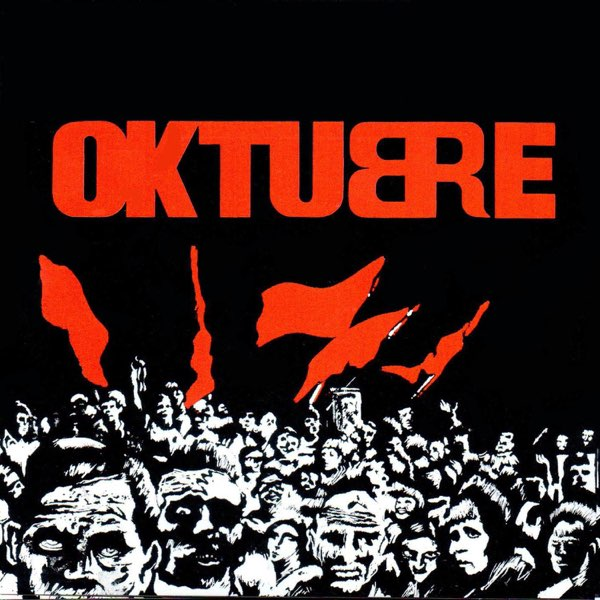

¿Qué banda argentina grabó el disco Oktubre en 1986, considerado un hito del rock nacional?
Oktubre (1986) es el segundo disco de Los Redondos. Su tapa, diseñada por Rocambole, está inspirada en la revolución rusa. Incluye ‘Ji ji ji’, el tema más icónico de la banda.
